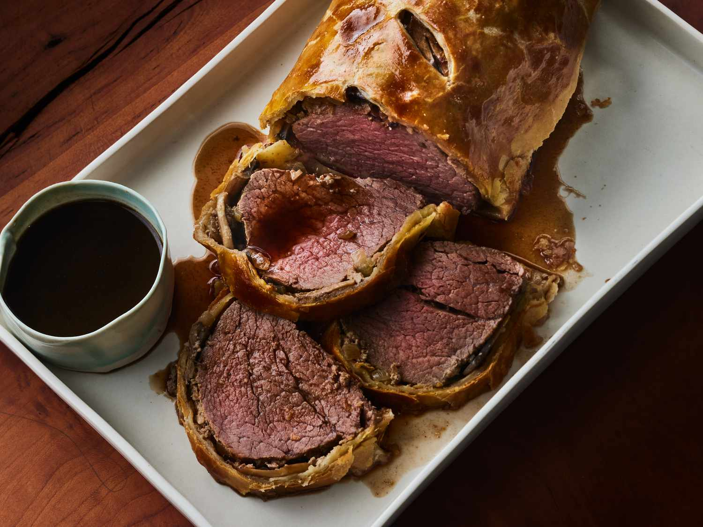

Beef Wellington

Description
Beef Wellington is a luxurious main dish made with beef tenderloin coated with paté and mushrooms, wrapped in puff pastry, and baked until the pastry is a beautiful golden brown.
The classic English dish is named after Arthur Wellesley, 1st Duke of Wellington.
Ingredients
- 1.5 to 2-pound beef tenderloin (center-cut, trimmed)
- 2 tablespoons olive oil
- Salt and freshly ground black pepper, to taste
- 1 pound cremini or button mushrooms, finely chopped
- 1 shallot, finely chopped
- 2 tablespoons Dijon mustard
- 2 cloves garlic, minced
- 2 tablespoons butter
- 8-10 slices of prosciutto
- 1 sheet of puff pastry (thawed if frozen)
- 1 egg, beaten (for egg wash)
- Fresh thyme leaves (optional, for garnish)
Steps
- Cover the beef with butter and bake until browned.
- Sauté the onions and mushrooms in butter. Mix the paté with butter and seasonings.
- Spread the paté mixture over the beef and top with the veggie mixture.
- Roll out the pastry dough and place beef in the center.
- Fold up and seal all the edges, place in a baking dish, cut a few slits in the top, and brush with egg yolk.
- Bake according to the instructions until the pastry is golden brown.
- Make the red wine sauce and serve alongside the Beef Wellington.